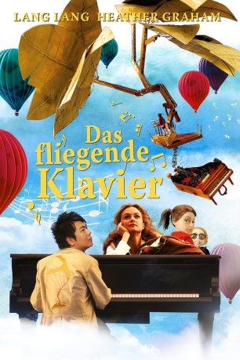

#11077 Das Fliegende Klavier
Alternativ: The Flying Machine (Englischer Titel)
 
 IMDB-Wertung: 4.9 / 10
IMDB-Wertung: 4.9 / 10  Metascore: 0
Metascore: 0 
Die alleinerziehende Geschäftsfrau Georgie hat viel um die Ohren und ist schon froh, mit den Kindern wenigstens mal einen Abend im Musiktheater verbringen zu dürfen. Dort läuft zur Klavierbegleitung ein Trickfilm um zwei Kinder, die der grauen Realität auf einem fliegenden Klavier entfliehen. Nach der Vorstellung hängt Georgie sofort wieder am Telefon und merkt gar nicht, wie ihre Kinder plötzlich verschwinden. Jane und Brad aber sind unterwegs mit dem Klavier, und Georgie muss sich beeilen, nicht den Anschluss zu verlieren.
Jahr: 2011
Dauer: 76 Minuten
FSK: 6
Land: England Studio: Capelight PicturesTonspuren: DTS - ,
Untertitel: Deutsch,
Auflösung: 1080p (1920x1040) Größe: 4751 MB
Genre: Abenteuer, Fantasy, Animation/Trick, Familie
Regisseur: Martin Clapp, Geoff Lindsey, Dorota Kobiela
Drehbuch: Geoff Lindsey, Marianela Maldonado, Robin Todd, Dorota Kobiela
Soundtrack:
Darsteller:
 Heather Graham als Georgie
Heather Graham als Georgie Benedict Wong als Lang Lang
Benedict Wong als Lang Lang- Lang Lang als Himself
- Sandra Portman als Chip Chip
- Steve Cookman als Crowd Voices
- Kizzy Mee als Jane
- John Paul Sutherland als Crowd Voices
- Ellie Jewell als Fred
- Lucy De Franca als Crowd Voices
- Jamie Munns als Fred
Datei: X:\Kinder Filme (A-F)\Fliegende Klavier, Das (2011, FSK6, 1920x1040).mkv seit 24.04.2019
Festplatte: Kinder-Filme+Trick
 Es gibt insgesamt 68 Filme in der Gruppe 'Kinder Filme (A-F)'
Es gibt insgesamt 68 Filme in der Gruppe 'Kinder Filme (A-F)'